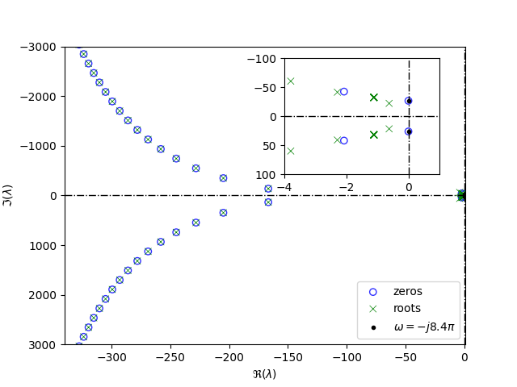

Note
Go to the end to download the full example code.
Non-collocated vibration absorbtion via delayed resonator#
In this [Peichl et al., 2025] authors considered chain of 3 flexibly linked masses (first and last also connected to rigid frame). Harmonic disturbance \(d(t) = \text{cos}(\omega t)\) acts on last mass, absorber \(m_a, k_a, c_a\) together with voice coil \(u(t)\) is mounted on the first mass to supress harmonic disturbance.
The whole system can be described via 4 second order linear equations
where \(x=[x_a, x_1, x_2, x_3]\) is a vector of displacement, \(M=\text{diag}(m_a, m_1, m_2, m_3)\) is mass matrix, \(C, K\) are damping and stiffness matrices, respectively, defined as
input matrices are defined as
Control law is position delayed resonator parametrized via gain \(g\) and delay \(\tau\)
vector \(E_a^T = [1, 0, 0, 0]\) encodes position of absorber mass.
Given the nominal parameters from the article, we construct closed loop as retarded delay differential equations (RDDE) defined by matrices \(A_0, A_1\) and delay \(\tau\)
We then check stability and plot position of the right-most roots. Finally we also check that a transmission zeros are placed at \(\pm j \omega\).
import matplotlib.pyplot as plt
import numpy as np
import tdcpy
import tdcpy.plot
# Main chain of masses-springs-dampers
m1, m2, m3 = 1.49, 0.509, 1.1 # masses [kg]
k1, k2, k3, k4 = 1001, 749, 711, 950 # stiffness [Nm-1]
c1, c2, c3, c4 = 4.35, 0.85, 1.85, 4.95 # damping [Nsm-1]
# absorber - mass [kg], stiffness [Nm-1], damping [Nsm-1]
ma, ka, ca = 0.420, 407, 1.8
# control law - nominal case
g, tau = -78.05282, 0.03303
omega_target = 8.4 # [Hz]
# Modal matrices
M = np.diag([ma, m1, m2, m3])
K = np.array([
[ka, -ka, 0, 0],
[-ka, k1+k2+ka, -k2, 0],
[0, -k2, k2+k3, -k3],
[0, 0, -k3, k3+k4],
])
C = np.array([
[ca, -ca, 0, 0],
[-ca, c1+c2+ca, -c2, 0],
[0, -c2, c2+c3, -c3],
[0, 0, -c3, c3+c4],
])
Minv = np.linalg.inv(M) # prepare inverse, mass are positive, always possible
Du = np.array([[1.], [-1], [0], [0]])
Dd = np.array([[0.], [0], [0], [1]])
# System matrices from modal form
A0 = np.block([
[np.zeros(shape=(4,4)), np.eye(4)],
[-Minv @ K, -Minv @ C],
])
Bu = np.block([
[np.zeros(shape=(4,1))],
[Minv @ Du],
])
Bd = np.block([
[np.zeros(shape=(4,1))],
[Minv @ Dd],
])
Ea = np.array([[1], [0], [0], [0], [0], [0], [0], [0],])
Et = np.array([[0], [0], [1], [0], [0], [0], [0], [0],])
A1 = g * Bu @ Ea.T
When matrices and delays are ready, we form
the descriptor and find right most roots. Regarding the position of zeros,
we can use tdcpy.zeros with specified rectangular region as our system is
SISO. In the case of multiple inputs and/or outputs, we recommend passing
input_index and output_index arguments explicitly as by default it is
assumed user is interested in transmission zeros between first input and
first output.
Finally, plot the results using tdcpy.plot.eigen_plot function and
a little bit of additional styling.
fig, ax1 = plt.subplots(1,1)
ax1.scatter(np.real(z), np.imag(z), marker="o", facecolors='none',
edgecolors='blue', alpha=0.8, label="zeros")
tdcpy.plot.eigen_plot(cr, ax=ax1)
ax1.scatter([0, 0], [omega_target*np.pi, -omega_target*np.pi], marker=".",
color="black", label=rf"$\omega=-j{omega_target}\pi$")
ax1.set_xlim((-340, 1))
ax1.set_ylim((3000, -3000))
ax1.legend(loc='lower right')
# second plot to show area around origin
ax2 = fig.add_axes([0.55, 0.55, 0.3, 0.3])
ax2.scatter(np.real(z), np.imag(z), marker="o", facecolors='none',
edgecolors='blue', alpha=0.8)
tdcpy.plot.eigen_plot(cr, ax=ax2)
ax2.scatter([0, 0], [omega_target*np.pi, -omega_target*np.pi], marker=".",
color="black")
ax2.set_xlim((-4, 1))
ax2.set_ylim((100, -100))
ax2.set_xlabel('')
ax2.set_ylabel('')
plt.show()

Total running time of the script: (0 minutes 3.796 seconds)